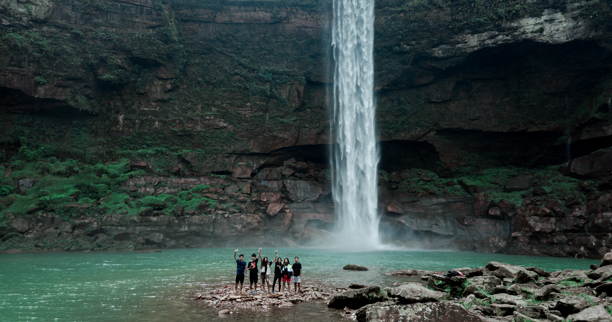

SERENE NORTH EAST
Duration - 14D/13N
|  | This amazing North East tour package takes you on a ride through some of the most beautiful and mystical lands of the country of India. Lying in the lap of the Himalayas, North East India is surely gifted with so many aspects of beauty that it has emerged out to be a dazzling and mesmerizing choice of a destination, and is a highly coveted place to go to. | ||||||||
| You can expect snow-covered mountains, green-clad hill slopes, waterfalls cascading down and shooting rainbows from them, tribes and tribal people going by their daily lives and living in perfect harmony with each other. That is the lesson that the 7 sister states of North East India send out, to live in harmony with your surroundings. And to show you how exactly that happens, this North East package takes you on an amazing tour. The northeast is the home to some of the best and must visit places in India, and that is what you will be witnessing here. |

|
Highlights -
-
- Enjoy stunning panoramas from the top of Victoria Peak
- full-day Disneyland tour with thrilling rides
- Ferry ride to Macau and city tour
Itinerary -
-
Day 1 - Arrival in Guwahati | Transfer to Shillong
After your arrival in Guwahati, our representative will meet you at the airport, and transfer you to Shillong.
The 100 km drive will take about 3 hours, post which you will check-in at the hotel.
Rest of the evening is for you to spend at leisure.
Overnight at hotel.
Day 2 - Trip to Cherrapunji
After breakfast this morning, you will be leaving to visit Cherrapunji, which is 56 km away. It is also the wettest place on earth.
You will be visiting the famous Dainthlen falls, Nohkalikai Falls, Nohsngithiang Falls, alongside the Mawsmai Caves and Thangkharang Park.
You will also be seeing the living root bridge.
A transfer will take you back to Shillong, where you will spend some time at the Shillong Peak.
Overnight at hotel.
Day 3 - Shillong Local Sightseeing
The day will be dedicated to exploring the beautiful Shillong.
You will see the Cathedral Church, Lady Hydari Park, the Orchidarium, Elephant Falls and the Golf course.
You will be going to the Shillong Peak after this to get a breathtaking view of the hill station.
Overnight at hotel.
Day 4 - Shillong to Kaziranga National Park
After breakfast, you will start on your way to reach the famous Kaziranga National Park, which is famous for being the home to the Great Indian One-Horned Rhinoceros.
Check-in here, and then spend the rest of the day at your leisure.
Overnight at Kaziranga.

Day 5 - A Day at Kaziranga National Park
You will be starting the day with an early morning Jeep Safari in the Park.
The main attraction here is to see the one-horned Rhino, but there are several other species of Flora and Fauna typical to this area that you will also be seeing on this day.
You will then return for breakfast and leave again for a Safari.
The evening will be for you to spend at your leisure.
Overnight at Kaziranga.
Day 6 - Transfer to Bhalukpong
The day will go by in the transfer to Bhalukpong after breakfast.
Overnight at Hotel in Bhalukpong.
Day 7 - Bhalukpong to Tawang
After breakfast on this morning, you will leave for a little bit of local sightseeing, before leaving for Tawang.
Overnight at hotel in Tawang.
Day 8 - Tawang Monastery
After an early breakfast, we will be leaving to see the 400 year old Tawang Monastery.
As the monastery is at the highest point in the city, you will be getting a breathtaking view of the hill station.
Also on the day is a visit to the War Memorial of Tawang.
You can spend the rest of the day shopping and explore.
Overnight at hotel.

Day 9 - Tawang to Dirang
You will be driving in the morning to reach Dirang from Tawang.
The rest of the day if for you to spend at your leisure in Dirang.
Overnight at hotel in Dirang.
Day 10 - Dirang Valley
You will be spending this day in witnessing the majestic sight of Dirang.
The visits today would be to the Apple and Kiwi gardens, and the Sangti Valley.
This will be followed by a visit to the Zimthung View Point.
Overnight at hotel.
Day 11 - Dirang to Nameri National Park
In the morning, you will spend some time in Dirang and see some more of the local sights.
You will then be driving to reach the Nameri National Park.
Overnight at hotel in Nameri National Park.
Day 12 - Nameri National Park Sightseeing | Guwahati
After breakfast, you will be spending some time seeing the sights of Nameri National Park.
You will then be taking a transfer back to Guwahati.
Overnight at Hotel.
Day 13 - Local Sightseeing in Guwahati
After breakfast, you will be starting a day dedicated to local sightseeing in Guwahati.
You will be seeing amazing spots like Srimanta Sankardev Kalakshetra, State Museum and to Emporiums where you can buy a variety of ethnic local products.
You will also be seeing other famous sights of Guwahati including Maa Kamakhya Temple, Navagraha Temple, Shukleshwar Temple & Balaji Temple.
Overnight at Hotel.
Day 14 - Check-out and Departure
After breakfast this morning, you will be transferred to the airport or railway station in Guwahati.
You can catch your return flight/train from here, bringing the experience to an end.
Inclusion -
-
All transport by a dedicated vehicle
Accommodation on twin sharing basis for thirteen nights.
Daily breakfast at hotel.
Restricted Area Permit for entering into Arunachal Pradesh.
English speaking accompanying tour guide throughout the tour.
One nature walk and one river safari in Nameri National park with park entrances.
One elephant safari and one jeep safari in Kaziranga National Park with park entrances
All parking, toll charges, drivers allowances etc.